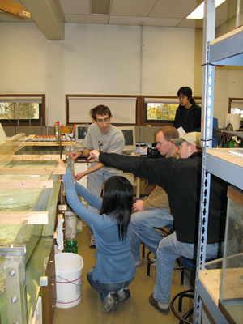

 |
Introduction to Fluid Dynamics
AMATH & ATM S 505A, OCEAN 511A (4 credits), FALL 2007
- Meetings: MWF 11:30-12:20 JHN 075 + W 8:30-9:20 or 9:30-10:20 (4th hour held in OSB 425, otherwise TBA)
- Instructor: Parker MacCready, 685-9588 OSB 311, office hours by appointment
- TA: Jihwan Kim, 661-3244, office hours 11:30-12:30 Tuesday and Thursday, Guggenheim 415L.
- Textbook (required): Fluid Mechanics, by Kundu & Cohen, any edition will do. Copies are available throught the bookstore.
|
DESCRIPTION: This class is for first year grad students in Atmospheric Science, Oceanography, Mechanical Engineering, and related disciplines. It is meant to be a rigorous introduction to basic aspects of fluid flow, from its molecular origins (what is pressure? what is viscosity?) to simple large scale behavior (why does atmospheric temperature decrease with height?). And of course we cover the fun things - like how vortices interact and why waves move the way they do. We develop and apply the important tools of fluid understanding: conservation of mass, momentum, energy, and vorticity. And we learn how to apply different reference frames (a point in space, a point following the fluid, a surface, a volume) to see problems in different ways.
CATALOG DESCRIPTION: Eulerian equations for mass, motion; Navier-Stokes equation for viscous fluids, Cartesion tensors, stress, strain relations; Kelvin's theorem, vortex dynamics; potential flows, flows with high, low Reynolds numbers; boundary layers, introduction to singular perturbation techniques; water waves; linear instability theory. Prerequisite: AMATH 403 or permission of instructor.
GRADING
- Homework: 60% (OK to work with others, but write it out yourself)
- Midterm 15% (take home, open book, open notes)
- Final 25% (take home, open book, open notes)
SYLLABUS
I. Properties of Fluids: Liquids and Gasses
- Wed 9/26 Class organization, what is a fluid?, continuum hypothesis
- Fri 9/28 Molecular origin of properties: gas vs. liquid, density, pressure and temperature, universal gas law
- Mon 10/1 More on pressure: equation of state, hydrostatic balance
- Wed 10/3 AM: Lab on compression of air (OTB 206)
- Wed 10/3 Thermodynamics for an ideal gas, internal energy, reversible work
- Fri 10/5 Surface tension, chemical diffusion, heat diffusion (Problem Set #1 assigned)
- Mon 10/8 Velocity, viscosity and stress
II. Vector Calculus and Fluid Kinematics
- Wed 10/10 AM Lagrangian & Eulerian views (OSB 425)
- Wed 10/10 The material derivative, particle paths and streamlines
- Fri 10/12 Vector Calculus: Divergence and Gauss' Divergence Theorem (PS#2 assigned)
III. Conservation Laws for Mass, Momentum
- Mon 10/15 Mass conservation
- Wed 10/17 AM: Lab on oscillating flow in tubes (OTB 206)
- Wed 10/17 Momentum conservation I
- Fri 10/19 Momentum conservation II (viscosity)
- Mon 10/22 Momentum conservation III (viscosity)
- Wed 10/24 AM Buoyancy (OSB 425)
- Wed 10/24 Scaling, and the Boussinesq Mass equation
IV. The Bernoulli Function and Energy Conservation
- Fri 10/26 Vorticity and the start of the Bernoulli function (PS#3 assigned)
- Mon 10/29 Bernoulli function and applications
- Wed 10/31 AM: Lab on Bernoulli function (OTB 206)
- Wed 10/31 Energy Conservation I
- Fri 11/2 Energy Conservation II (MIDTERM handed out, due 11/9)
- Mon 11/5 Movie (Pressure Fileds and Fluid Acceleration)
- Wed 11/7 Movie (Low Reynolds Number Flow) [NO AM CLASS]
- Fri 11/9 Energy III
- Mon 11/12 NO CLASS - Veteran's Day
- Wed 11/14 AM Conceptual Workshop (OSB 425)
- Wed 11/14 Energy IV - volume integral for plane Couette flow (PS#4 assigned)
- Fri 11/16 Energy V Internal energy and connections with KE and PE
V. Vorticity
- Mon 11/19 Circulation theorum
- Wed AM 11/21: Vorticity Lab (OTB 206)
- Wed 11/21 Point vorticies (PS#5 assigned)
- Fri 11/23 NO CLASS - Thanksgiving
VI. Potential Flow
- Mon 11/26 Irrotational flow
- Wed AM 11/28 Flow around a cylinder (OSB 425)
- Wed 11/28 Flow around a cylinder, drag and separation (PS#6 assigned)
- Fri 11/30 Movie (Fluid Dynamics of Drag, Part I)
VII. Waves
- Mon 12/3 Movie (Waves in Fluids)
- Wed AM 12/5 Surface gravity waves (OSB 425)
- Wed 12/5 Sound waves (Final Exam Assigned, due 12/12)
- Fri 12/7 Summary
ASSIGNMENTS
- Problem Set #1 (assigned 10/5/2007, due 10/12/2007 at the start of class)
- Problem Set #1 Solutions
- Problem Set #2 (assigned 10/12/2007, due 10/19/2007 at the start of class)
- Problem Set #2 Solutions
- Problem Set #3 (assigned 10/26/2007, due 11/2/2007 at the start of class)
- Problem Set #3 Solutions
- Midterm Exam (assigned 11/2/2007, due 11/9/2007 at the start of class)
- Midterm Solutions
- Problem Set #4 (assigned 11/14/2007, due 11/21/2007 at the start of class)
- Problem Set #4 Solutions
- Problem Set #5 (assigned 11/21/2007, due 11/28/2007 at the start of class)
- Problem Set #5 Solutions
- Problem Set #6 (assigned 11/28/2007, due 12/5/2007 at the start of class)
- Problem Set #6 Solutions
- Final Exam (assigned 12/5/2007, due 12/12/2007 at NOON in the box outside my office, 313 OSB).
- Final Exam Solutions
RECOMMENDED BOOKS
- Batchelor, G. K. (1967) An Introduction to Fluid Dynamics. Cambridge University Press, 615 pp. The classic text, authoritative, somewhat dated and difficult to get through early in your aducation. Definitely worth consulting when you need a deeper understanding.
- Gill, A. E. (1982) Atmosphere-Ocean Dynamics. Academic Press, 662 pp. A wonderfully-broad introduction to the topic of geophysical flows, often with very insightful derivations and explanations. Often used as the primary reference text for GFD I.
- Tritton, D. J. (1977) Physical Fluid Dynamics. Van Nostrand Reinhold, 362 pp. A more casual, and intuitively-pleasing treatment of incompressible flow at small to medium scales. No free surfaces, but lots of discussion of how real flows are affected by turbulence.
- Muller, P. (2006) The Equations of Oceanic Motion. Cambridge University Press, 291 pp. This is probably not suitable for beginners, but if eventually you want a really rigorous derivation of the equations we use, this the the best reference I have found.
- Prandtl, L. and O. G. Tietjens (1934) Fundamentals of Hydro- and Aeromechanics. Dover Publications, 270 pp. A beautifully-written introduction by one of the great modern masters. Here you will see many of the derivations that have ended up in Kundu and Cohen.
FLUID MECHANICS MOVIES
The classic series of Fluid Mechanics Movies, some of which we show, are available on the web
You have to download the free "RealPlayer" software to show these.